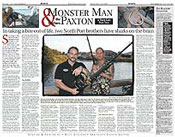
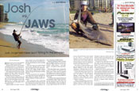
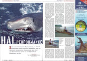
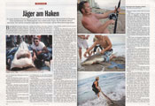
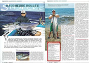

In the Media
Sun Newspapers
“As the news chopper swirls overhead filming, a steady stream of sharks swim just a few hundred feet off of the beach on Florida’s east coast. It’s a familiar scene to Floridians. It tends to frighten visitors. It also conjures up images of Chief Brody running down the beach of Amity screaming “GET OUT OF THE WATER!” This “invasion” draws media attention and creates a stir among the public every year around this time...”Read More
February 4th 2009 by Matt Stevens
Living Magazine
“Fishing has been a part of Josh Jorgensen's life for as long as he can remember. The allure of the outdoors and excitement of landing 'the big one' is a universal attraction for fishermen everywhere. But this 17-year-old has set his sights on the extreme side of sport fishing. Since taking up the sport Jorgensen has made a splash in the world of shark fishing...”Read More
July 2008 by Tim Fairhurst
Global Angler
“Seine furchteinflössemdem Beisswekzeuge, die perfekte Hydrodynamik seines muskulösen Körperbaus, seine auf Beutesuche spezialisierten Sinnesorgane, seine Kraft und Geschwindigkeit machen ihn zum Inbergrigg des Raubfisches: den Hai. Lange Zeit galt er als böse Fressmaschine, die vor nichts, auch nicht vor dem Menschen...”Read More
October 2010 by Peter Wahl
Spiegel Online
“An einem Strand in Florida trafen sich Sportfischer zur internationalen Meisterschaft im Haiangeln. Doch erstmals brach der Wettkampf mit einer traditionellen Regel: Die Raubfische blieben am Leben. Nun soll die archaische Jagd sogar dem Artenschutz und der Meeresforschung dienen. Blutrünstige Haie sind das Letzte, was die Urlauber auf...”Read More
February 2009 by Frank Thadeusz
Global Angler
“Viele Arten von Makrelen aus der Familie der Scombridae schwimmen in den Meeren der Tropen und Subtropen. Sie alle sind schlanke, unheimlich schnell schwimmende Raubfische mit kräftigen Kiefern und unglaublich scharfen Zähnen. Makrelen sind weltweit begehrte Sportfische. Sie sind sozusagen in weiten Teilen der Welt die Brot und Butterfische der...”Read More
October 2010 by Peter Wahl